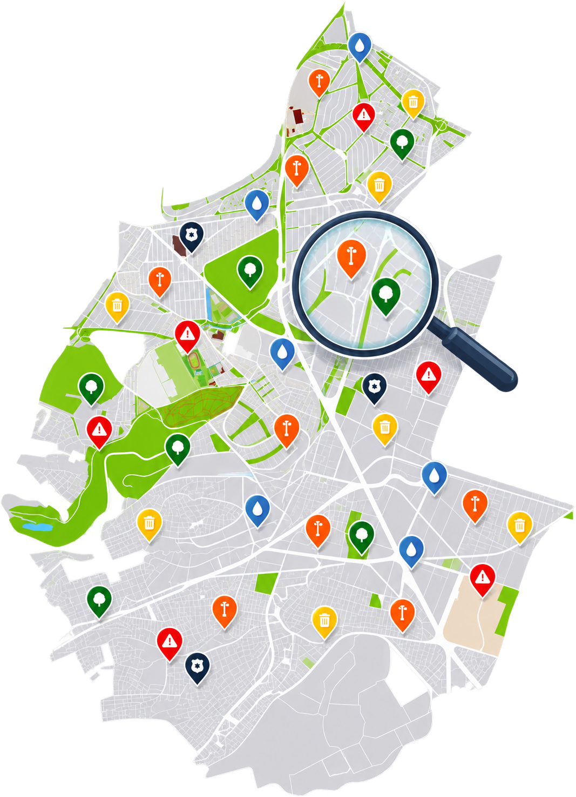
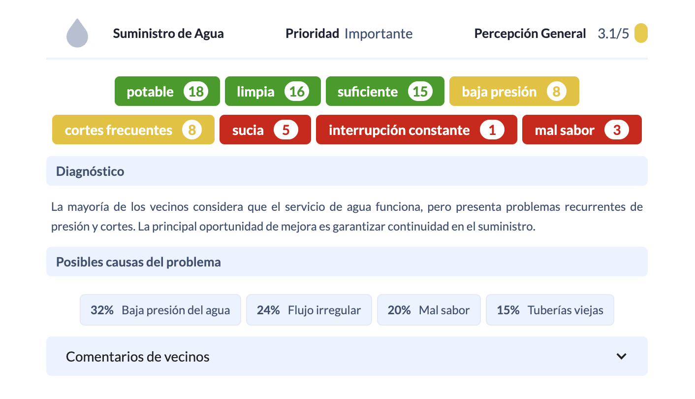

Identify local problems, needs, and priorities.

Run focused surveys on the issues you need to understand.
Open proposals to community knowledge and different points of view.
Collect ideas, suggestions, and reactions that help organize what people know.

Turn participation into clear information that is easier to review and use.

Build a network that can keep participating, contributing, and staying connected over time.
See how Güinect’s collective-intelligence tools can be configured for your community and your public-engagement goals.